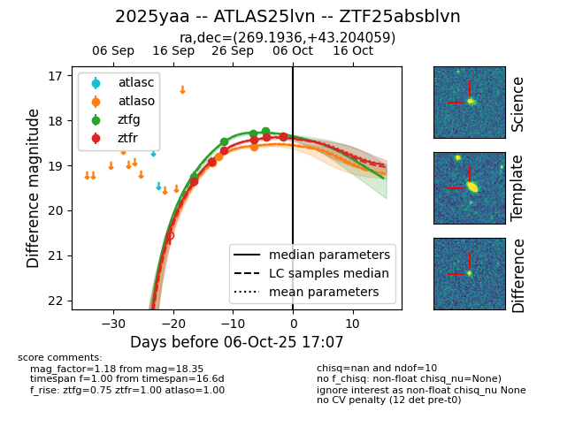
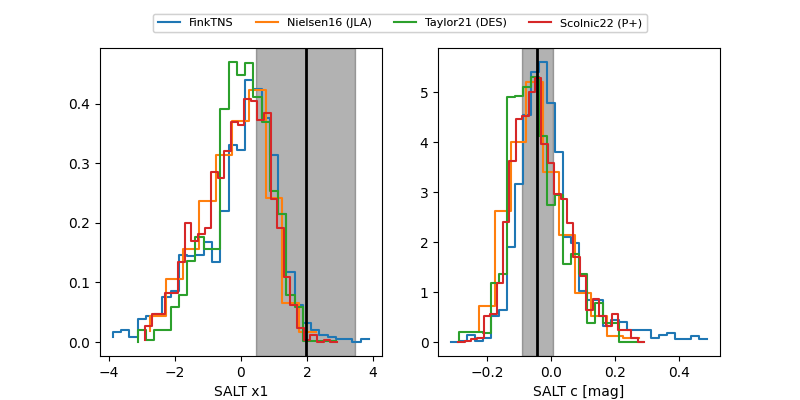

FINK: ZTF25absblvn
Lasair: ZTF25absblvn
ALeRCE: ZTF25absblvn
TNS: 2025yaa
YSE: 2025yaa
ZTF25absblvn (ztf,fink)
2025yaa (tns,yse)
ATLAS25lvn (atlas)
equatorial (ra, dec) = (269.1936,+43.20406)
galactic (l, b) = (69.7782,+27.73837)


last atlaso=18.59, ztfg=18.37, ztfr=18.35
3 atlaso, 5 ztfg, 6 ztfr detections